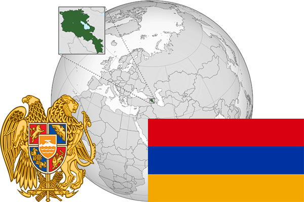

To`liq nomi: Armaniston Respublikasi
Region: Osiyoning g`arbiy qismi
Qonunchilik shakli: Respublika
Mustaqillik kuni: 28 may 1918 Ottomon Imperiyadan, 21 sentabr 1991 Sovet Ittifoqidan
Poytaxti: Yerevan
Maydoni: 29 743 km² (dunyoda 138 -o`rinda )
Chegaradosh davlatlari: Gruziya, Ozarbayjon, Eron,Turkiya
Aholisi: 2 986 100 (dunyoda 137-o`rinda ) 2017-yil roʻyxat
Aholi zichligi: 100,4/km²
Aholining o`rtacha yoshi: 72,4 yil ( 76,3 ayollar, 68,5 erkaklar)
Rasmiy tili: Arman tili
Dini: Asosiy qismi xristianlar
Pul birligi: Dram (AMD)
Telefon prefiksi: +374
Internet domen: .am
Xalqaro tashkilotlarga a`zoligi: BMT (1992 -yildan), Yevrosiyo iqtisodiy ittifoqi 02.01.2015 yildan)
Dengiz va okeanlarga chiqishi: yo`q
YIM: Butun: $ 20,831 milliard, Jon boshiga: $ 6 128 (2015 - yil roʻyxati)
Yirik shaharlari: Yerevan, Gyumri, Vanadzor, Abovyan, Echmiadzin